Catalogo: prima e dopo
Sei difetti del pannello catalogo corretti sul branch fix/catalog-ux-defects. Ogni coppia mostra lo stesso stato dell'app, ripreso prima su main e poi sul branch.
1Conteggio delle collection
Il conteggio guardava solo gli endpoint diretti: Shop mostrava 0 pur contenendo 12 endpoint nelle sotto-collection. Ora conta l'intero sottoalbero: Shop 12, Core API 10 (7 propri più i 3 di Admin).
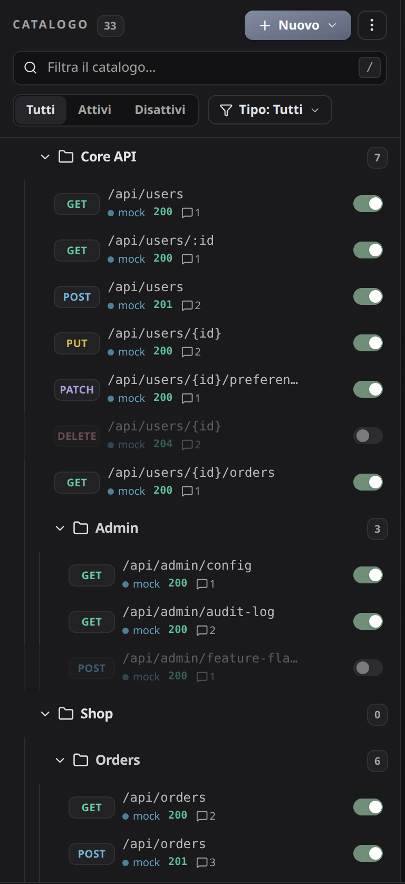
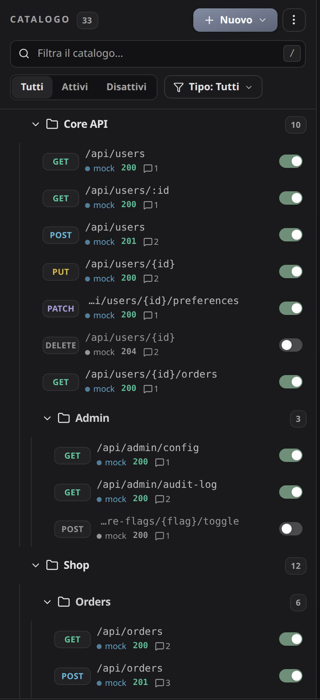
2Path troncati
Troncati in coda, PATCH e GET diventavano entrambi /api/orders/{orderId}/…. Ora l'ellissi cade in testa e resta la parte che li distingue: …/status e …/shipment-tracking. Il path intero resta nel tooltip.
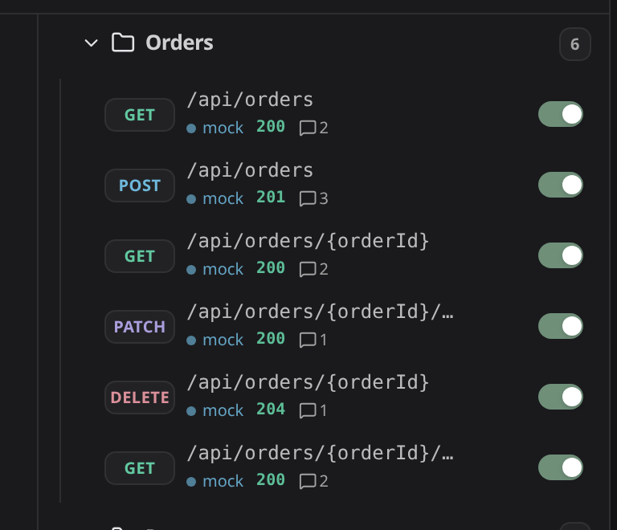
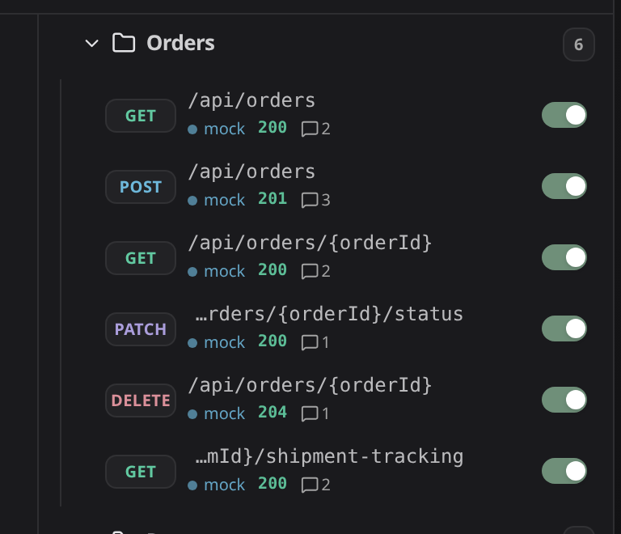
3Collection senza risultati sotto filtro
Cercando "orders" restavano in vista Auth, Admin, Payments e Catalog, vuote. Ora sotto filtro resta solo ciò che ha risultati, con i suoi antenati. Senza filtro le collection vuote restano, altrimenti non si potrebbero riempire.
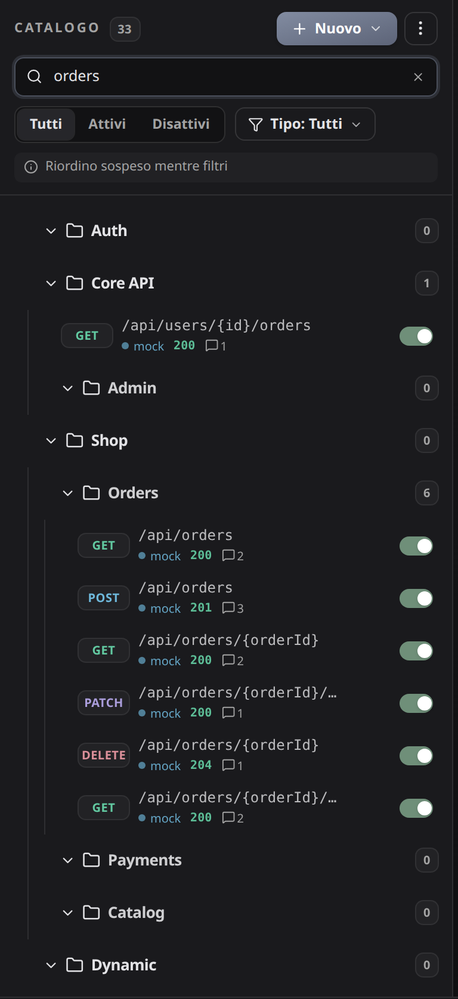
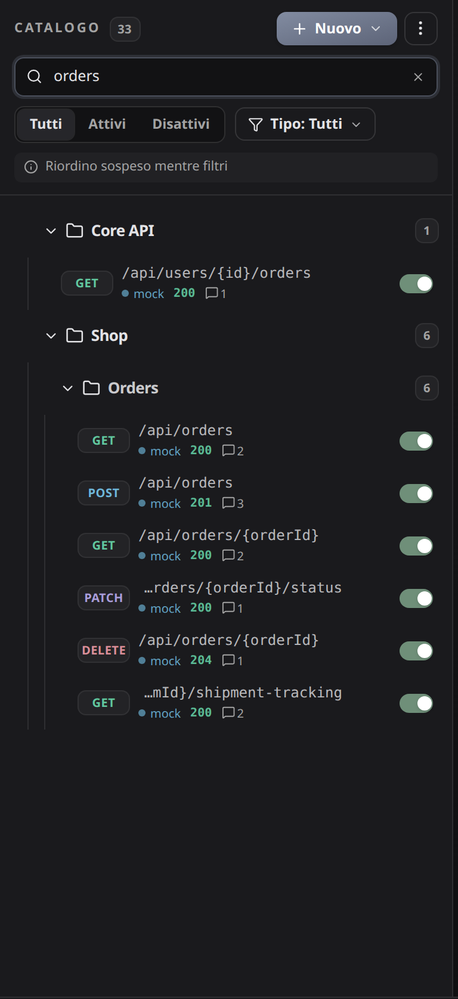
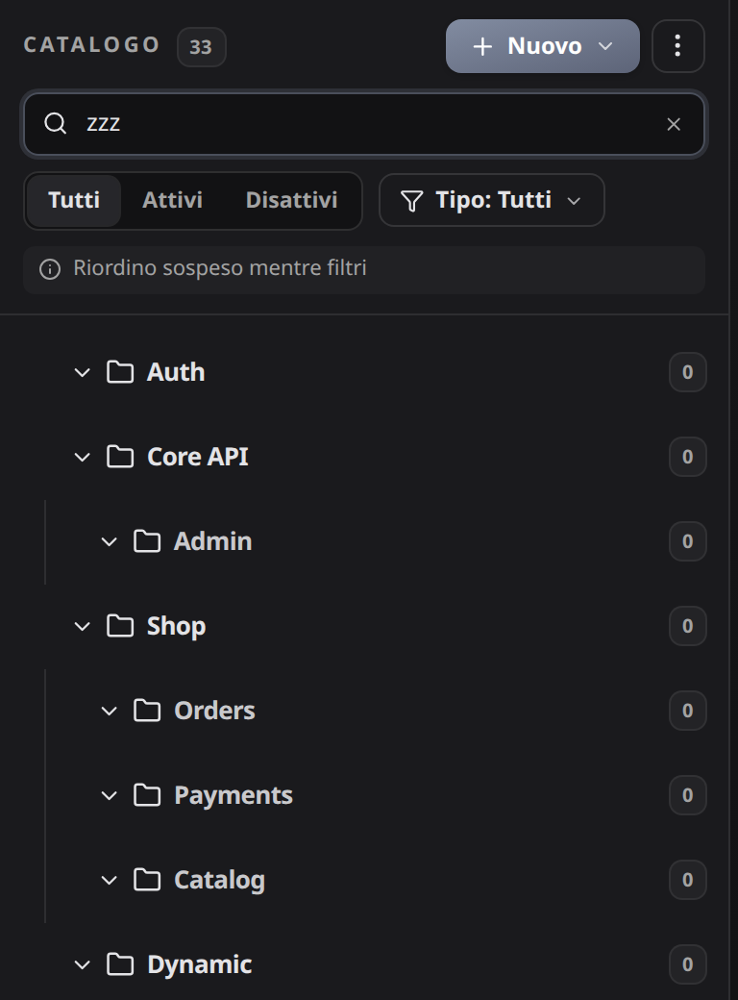
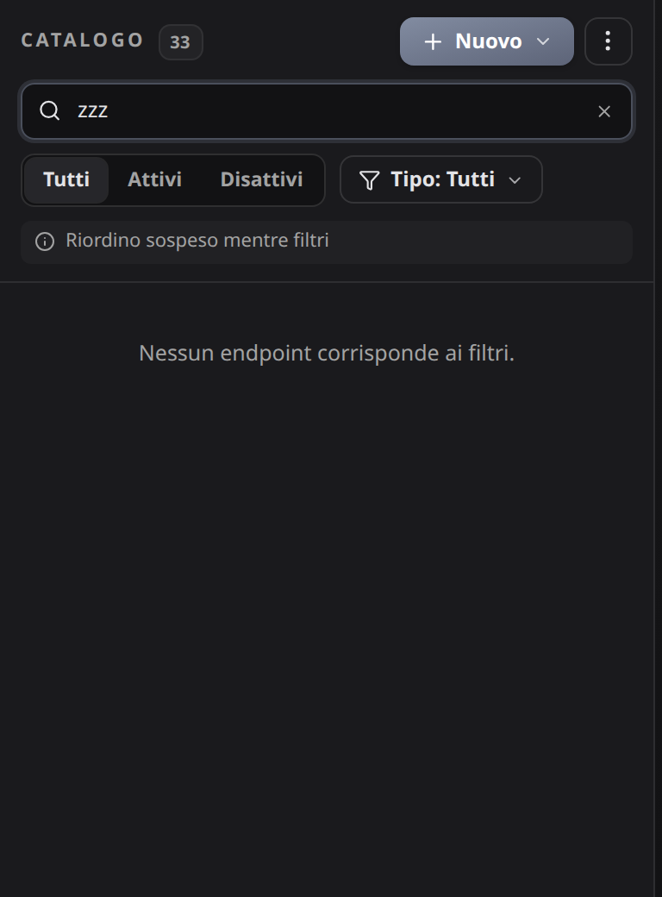
Effetto collaterale utile: il messaggio "Nessun endpoint corrisponde ai filtri" esisteva già, ma in un workspace con collection non compariva mai.
4Barra delle azioni di massa
Alla larghezza minima "2 selezionati" andava a capo dentro la propria etichetta. Ora non si spezza: "Sposta in" è diventato "Sposta", e se lo spazio non basta (font più larghi, altre lingue) scende a capo il gruppo dei pulsanti, intero.
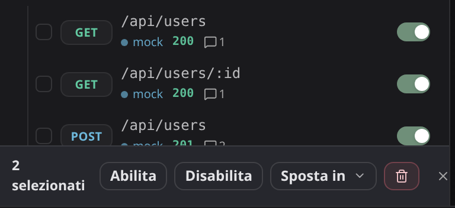
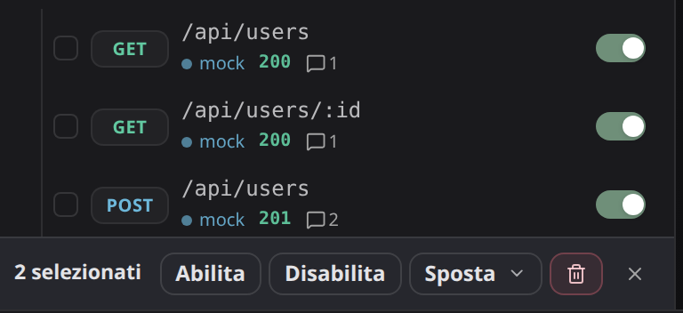
5Navigazione da tastiera
Stessa sequenza in entrambi: / e poi quattro volte freccia giù. Prima non succedeva nulla: le righe erano div cliccabili, irraggiungibili da tastiera. Ora il catalogo è un albero ARIA con un solo punto di Tab.
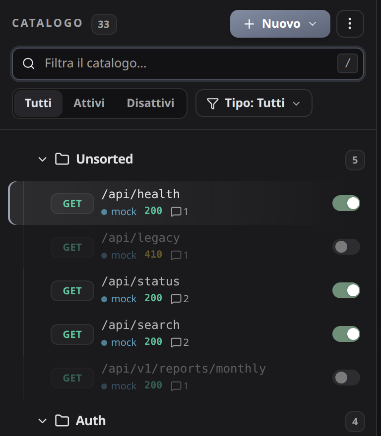
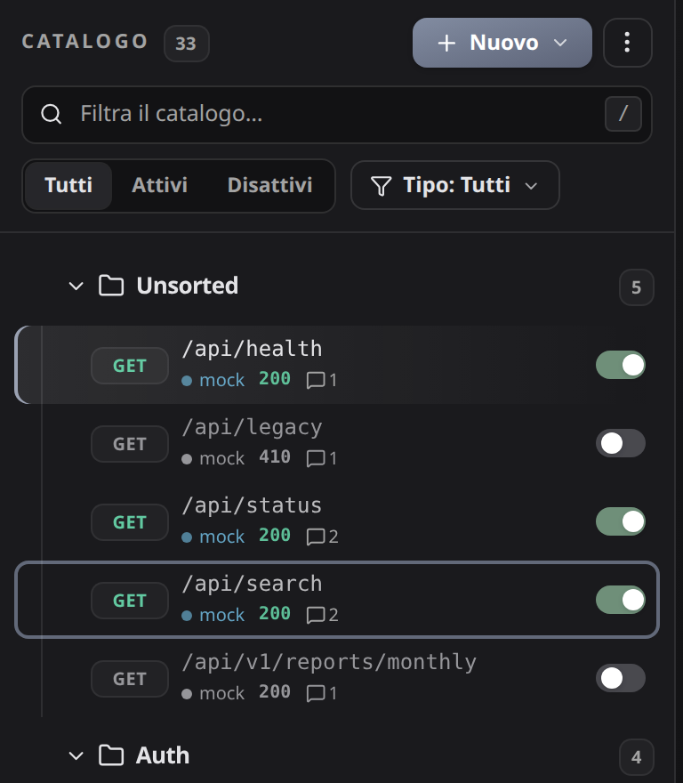
Frecce su e giù fra le righe, Home ed End agli estremi, destra e sinistra per aprire, chiudere e risalire alla cartella, Invio o Spazio per aprire l'endpoint. Spunta, menu e switch restano raggiungibili col Tab come prima.
6Contrasto degli endpoint disattivi
L'opacità al 42% portava il path a circa 2,7:1, sotto il 4,5:1 di WCAG AA. Ora la riga perde il colore invece dell'opacità: grigio pieno a 5,9:1, e lo stato lo dicono il grigio e lo switch.
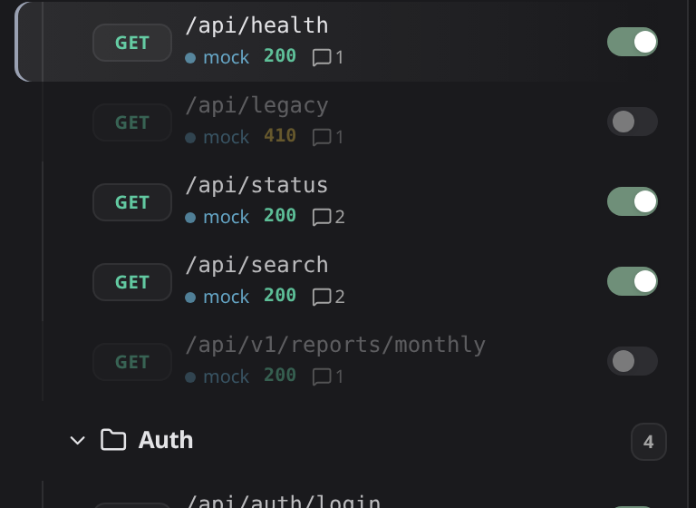
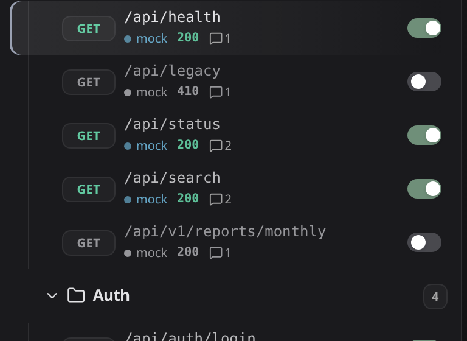
+Fuori dai sei: nomi dei pulsanti a icona
Controllando l'albero con axe sono emersi i pulsanti "⋮" di riga e di cartella, e quelli di conferma e annulla della creazione collection: avevano solo il tooltip, quindi per uno screen reader erano un "pulsante" senza nome. Ora hanno un'etichetta. È un commit a sé (f645553), senza effetti visibili: si può scartare senza toccare il resto.
Con questo axe non segnala violazioni sul pannello catalogo, né a riposo né con la riga di creazione e la barra di massa aperte. Prima ne segnalava una, critica, su 42 pulsanti.